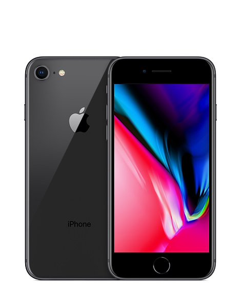

IPhone 8
IPhone 8
Features:
NETWORK Technology GSM / CDMA / HSPA / LTE LAUNCH Announced 2018, October Status Available. Released 2018, November BODY Dimensions 157.5 x 74.8 x 8.2 mm (6.20 x 2.94 x 0.32 in) Weight 185 g (6.53 oz) Build Front/back glass, aluminum frame SIM Dual SIM (Nano-SIM, dual stand-by) DISPLAY Type Optic AMOLED capacitive touchscreen, 16M colors Size 6.41 inches, 100.9 cm2 (~85.6% screen-to-body ratio) Resolution 1080 x 2340 pixels, 19.5:9 ratio (~402 ppi density) Protection Corning Gorilla Glass 6 - DCI-P3 PLATFORM OS Android 9.0 (Pie); OxygenOS 9.0.5 Chipset Qualcomm SDM845 Snapdragon 845 (10 nm) CPU Octa-core (4x2.8 GHz Kryo 385 Gold & 4x1.7 GHz Kryo 385 Silver) GPU Adreno 630 MEMORY Card slot No Internal 256 GB, 8 GB RAM, 128 GB, 6/8 GB RAM MAIN CAMERA Dual 16 MP, f/1.7, 25mm (wide), 1/2.6" 20 MP (16 MP effective), f/1.7, 25mm (wide), 1/2.8", 1.0µm, PDAF Features Dual-LED flash, HDR, panorama Video 2160p@30/60fps, 1080p@30/60/240fps, 720p@480fps SELFIE CAMERA Single 16 MP, f/2.0, 25mm (wide), 1/3.1" Features Auto-HDR, gyro-EIS Video 1080p@30fps SOUND Loudspeaker Yes 3.5mm jack No - Active noise cancellation with dedicated mic - Dirac HD sound COMMS WLAN Wi-Fi 802.11 a/b/g/n/ac, dual-band, WiFi Direct Bluetooth 5.0, A2DP, aptX HD, LE GPS Yes, with A-GPS, GLONASS, BDS, GALILEO NFC Yes Radio No USB 2.0, Type-C 1.0 reversible connector, USB On-The-Go FEATURES Sensors Fingerprint (under display), accelerometer, gyro BATTERY Non-removable Li-Po 3700 mAh battery Charging Fast battery charging 5V/4A 20W MISC Colors Thunder Purple, Mirror Black, Midnight Black Price About 550 EUR TESTS Performance Basemark OS II: 4941 / Basemark OS II 2.0: 4452 Basemark X: 43886 Display Contrast ratio: Infinite (nominal), 4.138 (sunlight) Camera Photo / Video Loudspeaker Voice 67dB / Noise 72dB / Ring 84dB Audio quality Noise -93.4dB / Crosstalk -93.8dB Battery life Endurance rating 90h
IPhone X
Features:
NETWORK Technology GSM / CDMA / HSPA / LTE LAUNCH Announced 2018, October Status Available. Released 2018, November BODY Dimensions 157.5 x 74.8 x 8.2 mm (6.20 x 2.94 x 0.32 in) Weight 185 g (6.53 oz) Build Front/back glass, aluminum frame SIM Dual SIM (Nano-SIM, dual stand-by) DISPLAY Type Optic AMOLED capacitive touchscreen, 16M colors Size 6.41 inches, 100.9 cm2 (~85.6% screen-to-body ratio) Resolution 1080 x 2340 pixels, 19.5:9 ratio (~402 ppi density) Protection Corning Gorilla Glass 6 - DCI-P3 PLATFORM OS Android 9.0 (Pie); OxygenOS 9.0.5 Chipset Qualcomm SDM845 Snapdragon 845 (10 nm) CPU Octa-core (4x2.8 GHz Kryo 385 Gold & 4x1.7 GHz Kryo 385 Silver) GPU Adreno 630 MEMORY Card slot No Internal 256 GB, 8 GB RAM, 128 GB, 6/8 GB RAM MAIN CAMERA Dual 16 MP, f/1.7, 25mm (wide), 1/2.6" 20 MP (16 MP effective), f/1.7, 25mm (wide), 1/2.8", 1.0µm, PDAF Features Dual-LED flash, HDR, panorama Video 2160p@30/60fps, 1080p@30/60/240fps, 720p@480fps SELFIE CAMERA Single 16 MP, f/2.0, 25mm (wide), 1/3.1" Features Auto-HDR, gyro-EIS Video 1080p@30fps SOUND Loudspeaker Yes 3.5mm jack No - Active noise cancellation with dedicated mic - Dirac HD sound COMMS WLAN Wi-Fi 802.11 a/b/g/n/ac, dual-band, WiFi Direct Bluetooth 5.0, A2DP, aptX HD, LE GPS Yes, with A-GPS, GLONASS, BDS, GALILEO NFC Yes Radio No USB 2.0, Type-C 1.0 reversible connector, USB On-The-Go FEATURES Sensors Fingerprint (under display), accelerometer, gyro BATTERY Non-removable Li-Po 3700 mAh battery Charging Fast battery charging 5V/4A 20W MISC Colors Thunder Purple, Mirror Black, Midnight Black Price About 550 EUR TESTS Performance Basemark OS II: 4941 / Basemark OS II 2.0: 4452 Basemark X: 43886 Display Contrast ratio: Infinite (nominal), 4.138 (sunlight) Camera Photo / Video Loudspeaker Voice 67dB / Noise 72dB / Ring 84dB Audio quality Noise -93.4dB / Crosstalk -93.8dB Battery life Endurance rating 90h